La percezione come strumento del progetto
La percezione non è ricezione passiva, ma un’azione costruttiva che organizza lo spazio mentalmente prima ancora di qualsiasi disegno. Profondità, ritmo, luce, direzione non sono dati oggettivi: emergono dallo sguardo dell’architetto che struttura relazioni. L’immagine iniziale del progetto nasce da questa forma attiva di vedere, che si traduce in configurazioni già dotate di coerenza interna.
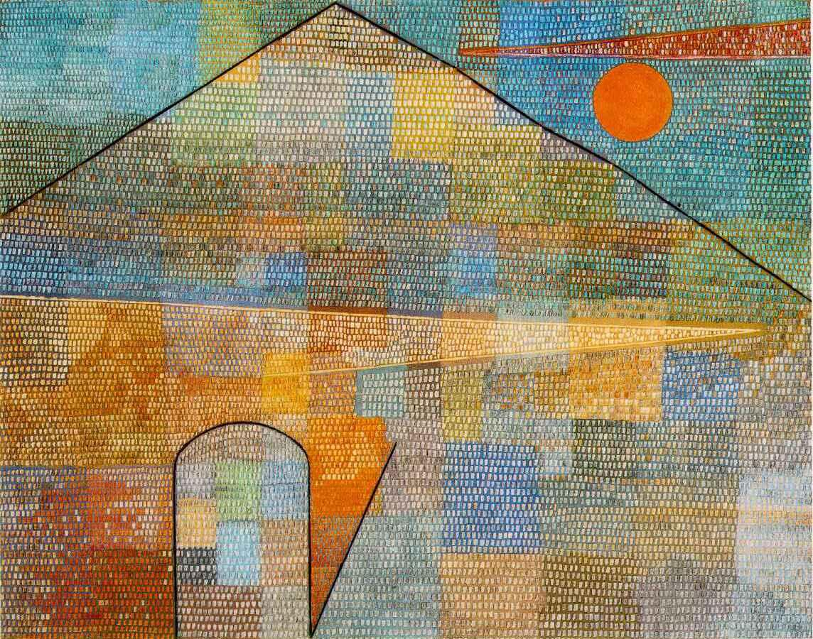
- direzioni latenti,
- campi di tensione,
- modulazioni di luce,
- una soglia percettiva,
Il dipinto Ad Parnassum di Paul Klee è una delle opere principali dell’artista, risalente al 1932 e realizzata in una fase importante della sua carriera. Il dipinto è realizzato in uno stile di neodivisionismo sviluppato dallo stesso Klee. Combina punti, linee e aree di colore in un’opera mosaica e complessa. Il titolo fa riferimento al monte Parnaso della mitologia greca, dimora di Apollo e delle muse. Simboleggia un percorso di realizzazione creativa. L’opera è spesso associata alla musica. Un possibile riferimento è il libro di teoria musicale “Gradus ad Parnassum”, che Klee conosceva bene. La forma della piramide è stata influenzata dal viaggio di Klee in Egitto nel 1928, ma potrebbe anche riferirsi al monte Niesen sul lago di Thun, vicino alla sua città natale, Berna.
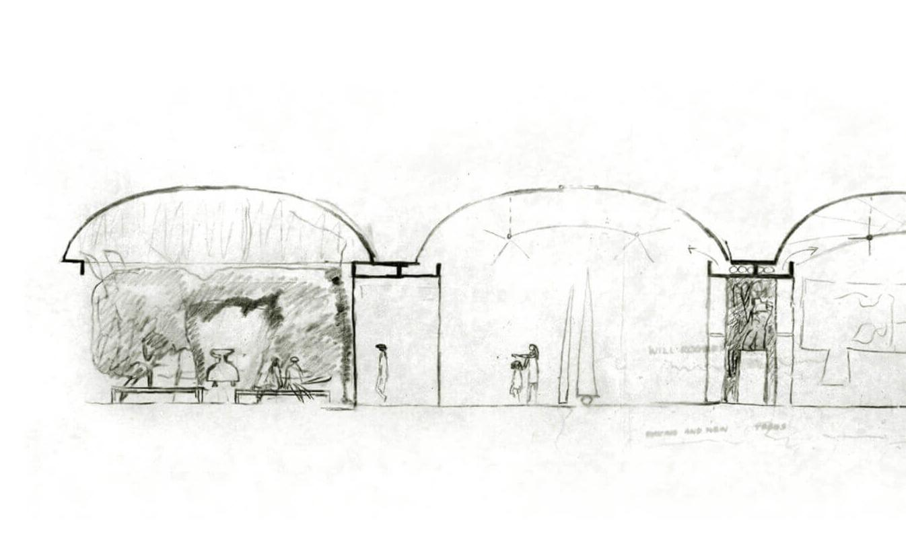
- la luce che sostiene la forma,
- la serialità intuitiva,
- la proporzione come idea,
- l’atmosfera prima della costruzione.
La collezione Louis I. Kahn della Stuart Weitzman School of Design dell’Università della Pennsylvania è il principale archivio delle sue opere. La collezione ospita una gamma completa di materiali relativi al Kimbell Art Museum, che sono esempi eccezionali dello stile grafico di Kahn e dello sviluppo della sua filosofia progettuale. La collezione comprende 34 disegni originali di progettazione e presentazione per il Kimbell. Almeno dodici sono stati identificati come schizzi di Kahn, datati principalmente 1967 e uno del 1969. Questi disegni sono spesso realizzati a carboncino e matita o pastello colorato su carta da lucido gialla, mettendo in mostra la sua abilità artistica e il suo approccio alla progettazione architettonica. Gli schizzi sono stati probabilmente utilizzati per presentare il progetto in evoluzione alla Kimbell Art Foundation e illustrare i suoi concetti di luce, forma e materiale che sono diventati i tratti distintivi dell’edificio finito.
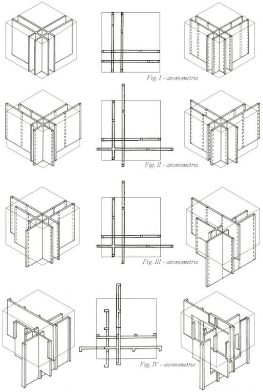
- griglie,
- traslazioni,
- offset,
- relazioni astratte.
I diagrammi concettuali della Casa VI di Peter Eisenman illustrano la casa come una “registrazione del processo di progettazione” basata sulla manipolazione sistematica di una griglia iniziale. Il progetto ha seguito un processo formale e generativo utilizzando una serie di trasformazioni (inversione, slittamento, montaggio) su elementi astratti, dando priorità al concetto teorico rispetto alla funzione o alla costruzione convenzionale. Il processo di progettazione della Casa VI è stato un esercizio intellettuale di forma pura e trasformazione, con la struttura risultante che funge da manifestazione fisica dei passaggi concettuali dell’architetto. I concetti chiave rappresentati nei diagrammi includono:
- Griglia iniziale e cubo: Il processo inizia con un cubo puro e concettuale e una griglia definita, che stabilisce l’ordine fondamentale per tutte le manipolazioni successive.
- Quattro piani/pareti intersecanti: quattro linee (o piani) vengono estruse dalla griglia per diventare pareti intersecanti. Questi elementi iniziali formano la struttura organizzativa primaria della casa.
- Operazioni di trasformazione: Eisenman ha applicato una serie di operazioni formali a questi piani, che sono esplicitamente documentate nei suoi numerosi diagrammi assonometrici. Queste operazioni includono: a) Inversione: le pareti sono state estese e invertite, sfidando le tipiche relazioni spaziali; b) Slittamento: due delle pareti sono state “slittate” o abbassate, creando differenze di livello verticali e complessità spaziale; c) Montaggio: ulteriori passaggi hanno comportato la sottrazione, l’estensione e lo spostamento degli elementi delle pareti, generando la forma finale.
- Disegni assonometrici: Eisenman ha utilizzato principalmente disegni in proiezione assonometrica, che rappresentano le caratteristiche distintive del suo contributo intellettuale. Questi diagrammi non erano meramente illustrativi, ma costituivano una parte fondamentale dell’opera architettonica stessa, destinati ad essere studiati insieme all’edificio fisico per comprendere appieno la logica alla base del progetto.
I diagrammi concettuali sono fondamentali per comprendere Casa VI perché la forma costruita stessa resiste alla percezione convenzionale. La casa è stata progettata per essere vissuta non solo fisicamente, ma anche concettualmente, come una serie di fotogrammi di un film o un time-lapse del processo di progettazione compresso in un unico oggetto. Questo approccio ha fatto sì che gli aspetti funzionali della casa fossero spesso ignorati a favore dell’esperimento formale (ad esempio, una colonna strutturale posizionata al centro del tavolo della cucina o una fessura di vetro nel pavimento della camera da letto).
Dall’immagine virtuale alla soglia del progetto
Ogni progetto attraversa una soglia invisibile in cui l’intuizione si trasforma in orientamento. L’immagine mentale iniziale si condensa in una prima decisione strutturante: un gesto, una direzione, un nucleo. È il momento in cui il pensiero si fa spazio e il progetto diventa possibile. Le immagini mostrano questa transizione dal vago alla struttura.

- luce zenitale,
- forma delle sale di lettura,
- sequenza spaziale,
- direzione del percorso.
Alvar Aalto utilizzava il disegno come strumento fondamentale nel suo processo di progettazione, in particolare nello sviluppo di soluzioni innovative per le caratteristiche uniche della biblioteca, come il sistema di illuminazione naturale nella sala di lettura e il soffitto a forma di onda progettato acusticamente nell’auditorium. Questi schizzi sono fondamentali per comprendere il suo approccio organico e incentrato sull’uomo all’architettura moderna.

- luce,
- atmosfera,
- direzione,
- materia percepita,
I disegni concettuali ad acquerello di Steven Holl sono fondamentali per la sua metodologia progettuale, fungendo da scintilla iniziale e modalità di pensiero per quasi tutti i suoi progetti. Questi piccoli schizzi, spesso di dimensioni 5x7 pollici, catturano i fenomeni dello spazio, della luce e delle sensazioni prima dell’inizio di qualsiasi costruzione.
Il ruolo degli acquerelli nel suo processo creativo
- Concettualizzazione: ogni progetto inizia con un unico schizzo ad acquerello, spesso realizzato al mattino presto nella sua “capanna degli acquerelli” a Rhinebeck, New York. Questo processo è una forma di meditazione e permette alle idee di emergere in modo intuitivo.
- Esplorare la luce e lo spazio: gli acquerelli sono un mezzo ideale per lo stile “luminista” di Holl, poiché la loro natura fluida e traslucida aiuta a visualizzare l’interazione tra luce, colore e forma che egli cerca di ottenere nei suoi edifici.
- Progettazione iterativa: gli schizzi acquerellati iniziali ispirano la creazione di modelli fisici, che a loro volta portano a nuovi schizzi in un ciclo iterativo di scoperta e perfezionamento. L’edificio finale mira a preservare lo spirito di queste concezioni artistiche iniziali.
- Strumento di comunicazione: questi disegni fungono da ponte tra immaginazione e realtà, aiutando a comunicare le intenzioni progettuali astratte ai clienti e ai membri del team.

- la nascita di un’idea spaziale unitaria,
- la transizione dal concetto all’organizzazione,
- una geometria che non è ancora un progetto, ma è già una direzione inevitabile.
Il diagramma iniziale del Rolex Learning Center di SANAA si concentrava probabilmente sulla sua organizzazione concettuale come spazio unico, continuo e ondulato, che appare più organico di quanto suggerisca la sua pianta rettangolare. Questo approccio è stato utilizzato per creare un ambiente aperto e fluido che sfida gli spazi di apprendimento tradizionali.
Il progetto è stato guidato dall’idea di un unico grande piano pubblico fuori terra, un “paesaggio astratto”, che utilizza variazioni topografiche anziché muri fisici per definire le diverse aree funzionali. Gli elementi chiave del diagramma includevano:
- Una lastra continua: un diagramma primario avrebbe mostrato un unico grande piano orizzontale che ondula dolcemente, con il pavimento e il tetto sempre paralleli tra loro. Questo crea una superficie calpestabile continua che è essenzialmente un unico piano principale, con alcune aree sollevate dal suolo.
- Pati/pozzi di luce (i “buchi del formaggio”): il piano è perforato da 14 vuoti circolari o ovali di forma irregolare, denominati “buchi del formaggio”. Questi fungono da cortili interni e pozzi di luce, portando la luce naturale in profondità nell’ampio open space e contribuendo a organizzare gli spazi circostanti.
- Assenza di confini tradizionali: un aspetto fondamentale illustrato nei primi schemi era la deliberata assenza di pareti interne o porte per separare le funzioni. Al contrario, i cambiamenti nell’altezza del pavimento (colline e valli) e la disposizione dei patii sono stati utilizzati per delimitare sottilmente zone tranquille, aree sociali e spazi di lavoro.
- Accessibilità e flusso: il progetto enfatizza l’apertura e l’accessibilità da tutti i lati della sua impronta rettangolare di base. L’idea era quella di creare una relazione porosa e fluida tra il paesaggio esterno e lo spazio pubblico interno, convergente verso un ingresso centrale.
La percezione come costruzione dello spazio:
profondità, ritmo, luce, direzione
Lo spazio si configura attraverso relazioni percettive. Profondità, scansioni, pieni e vuoti, direzioni e intensità luminose compongono una struttura dinamica che la mente riconosce prima ancora che esista un progetto. L’immagine non rappresenta una forma, ma rivela una logica nascosta dello spazio che predispone l’atto compositivo.

- la profondità è un fenomeno percettivo,
- l’occhio organizza lo spazio come campo di energia,
- la direzione è data dall’intensità luminosa,
- la soglia tra reale e virtuale è il vero contenuto.
A Frontal Passage è un’installazione luminosa immersiva di James Turrell che utilizza luci fluorescenti per manipolare la percezione dello spazio, del colore e della profondità da parte dello spettatore. L’opera fa parte della serie Wedgeworks dell’artista ed è attualmente conservata nella collezione del Museum of Modern Art (MoMA) di New York.
Per sperimentare A Frontal Passage, il visitatore entra in una camera buia. All’interno, una “parete” radiosa ma nitidamente definita di luce rossa pura e saturata sembra dividere la stanza in diagonale. La luce sembra avere una densità fisica e una superficie piatta, come se fosse un oggetto solido o un rettangolo dipinto su una parete.
Gli elementi chiave dell’esperienza includono:
- Manipolazione della percezione. Gli spettatori sono incoraggiati a camminare verso la parete di luce. Mentre lo fanno, si rendono conto che la “parete” non ha massa; si può attraversare il confine percepito ed essere avvolti dalla luce stessa. Questo crea un effetto disorientante in cui la distinzione tra l’interno e l’esterno del campo luminoso si confonde.
- Colore e forma. Il colore della luce cambia sottilmente nel tempo, passando da diverse tonalità di rosso al viola e al blu, rendendo i contorni della forma meno rigidi. La superficie della luce appare completamente piatta e infinitamente profonda.
- Focus sull’atto del vedere. L’opera di Turrell non riguarda un oggetto, ma l’atto percettivo dello spettatore. Rimuovendo un oggetto fisico tradizionale, costringe lo spettatore a diventare consapevole di come i propri occhi e la propria mente interpretano la luce e lo spazio. L’artista mira a rendere la sua arte essa stessa luce, non una sua rappresentazione.

- la profondità nasce dal contrasto pieno/vuoto,
- la luce “taglia” lo spazio,
- la direzione è inscritta nella croce luminosa,
- il ritmo è dato dai piani ortogonali,
- la percezione costruisce lo spazio molto più della materia.
I disegni concettuali ad acquerello di Steven Holl sono fondamentali per la sua metodologia progettuale, fungendo da scintilla iniziale e modalità di pensiero per quasi tutti i suoi progetti. Questi piccoli schizzi, spesso di dimensioni 5x7 pollici, catturano i fenomeni dello spazio, della luce e delle sensazioni prima dell’inizio di qualsiasi costruzione.
Il ruolo degli acquerelli nel suo processo creativo
- Concettualizzazione: ogni progetto inizia con un unico schizzo ad acquerello, spesso realizzato al mattino presto nella sua “capanna degli acquerelli” a Rhinebeck, New York. Questo processo è una forma di meditazione e permette alle idee di emergere in modo intuitivo.
- Esplorare la luce e lo spazio: gli acquerelli sono un mezzo ideale per lo stile “luminista” di Holl, poiché la loro natura fluida e traslucida aiuta a visualizzare l’interazione tra luce, colore e forma che egli cerca di ottenere nei suoi edifici.
- Progettazione iterativa: gli schizzi acquerellati iniziali ispirano la creazione di modelli fisici, che a loro volta portano a nuovi schizzi in un ciclo iterativo di scoperta e perfezionamento. L’edificio finale mira a preservare lo spirito di queste concezioni artistiche iniziali.
- Strumento di comunicazione: questi disegni fungono da ponte tra immaginazione e realtà, aiutando a comunicare le intenzioni progettuali astratte ai clienti e ai membri del team.

- profondità data dall’orizzonte,
- spazio costruito dallo sguardo,
- direzione implicita,
- relazione tra pieno (scultura) e vuoto (mare/cielo),
- “campo” percepito come immagine mentale.
L’opera di Eduardo Chillida, intitolata Elogio del Horizonte, è una scultura monumentale in cemento inaugurata nel 1990 a Gijón, in Spagna. L’opera, che si affaccia sull’Oceano Atlantico, è pensata per incorniciare l’orizzonte e amplificare il suono del mare attraverso le sue forme. Nonostante le sue dimensioni imponenti, l’intento dell’artista non era quello di dominare lo spazio, ma di interagire con esso.
Le figure della profondità:
piani, superfici, sequenze, intervalli
La profondità non è distanza fisica, ma costruzione mentale fatta di rapporti tra piani, intervalli, soglie, compressioni. È una logica stratificata che organizza lo spazio e guida la percezione. Le immagini selezionate rivelano la potenza strutturante della profondità, come principio fondante dell’organizzazione architettonica.
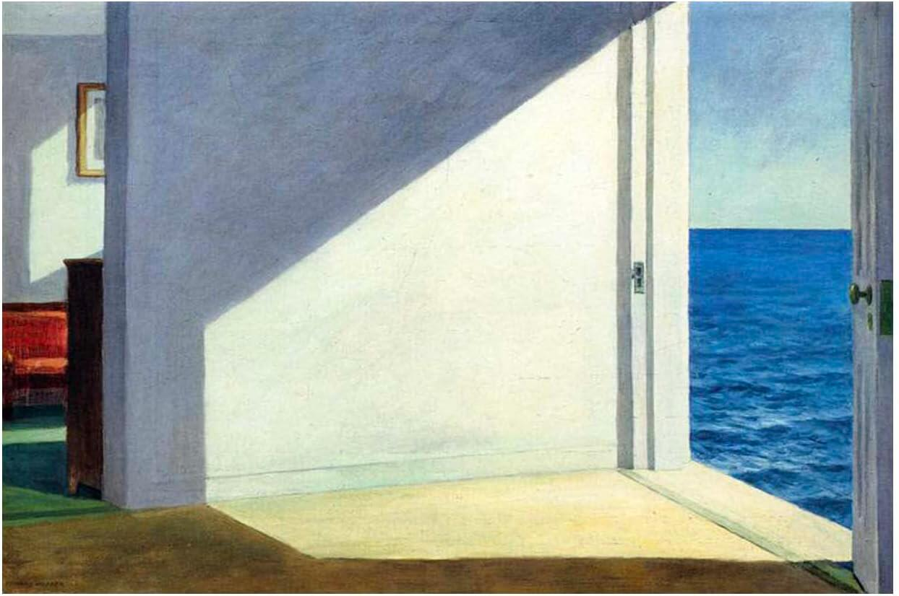
- un piano interno,
- una soglia abbagliante,
- un piano esterno marino,
- nessuna figura, solo percezione pura.
Il dipinto di Edward Hopper Rooms by the Sea (1951) è ospitato nella collezione permanente della Yale University Art Gallery a New Haven, nel Connecticut. Hopper ha completato il dipinto a olio su tela nel suo studio a South Truro, nel Massachusetts, e la composizione ricorda la vista dalla porta sul retro del suo studio. L’immagine austera raffigura una stanza vuota con una porta aperta che conduce direttamente al mare. La luce solare che entra nella stanza crea un senso di solitudine e introspezione, un tema ricorrente nell’opera di Hopper.
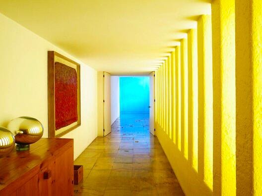
- campiture cromatiche,
- luce laterale,
- piani opachi e luminosi,
- pause e soglie.
Il corridoio e la zona piscina di Casa Gilardi offrono esperienze spaziali nettamente contrastanti, che illustrano la maestria di Luis Barragán nel manipolare la luce, il colore e l’atmosfera per suscitare emozioni diverse.
Il corridoio funge da elemento di transizione, una progressione attentamente orchestrata verso lo spazio culminante della piscina. È caratterizzato da una luce calda e dorata ottenuta grazie a una fila di piccole finestre verticali con vetri dipinti di giallo lungo un lato. Lo spazio è intenzionalmente stretto e lungo, creando un senso di anticipazione e movimento. La luce gialla inonda le pareti bianche, creando un’atmosfera quasi eterea, simile al bagliore di un tramonto, che guida l’occhio e il corpo verso la destinazione finale. Oltre a collegare la parte anteriore della casa con la zona posteriore, il corridoio incornicia il patio adiacente con l’albero di jacaranda, sebbene l’accesso diretto avvenga solo dalla sala da pranzo.
La zona piscina è l’apice del design, un’area pensata per la socializzazione, la riflessione e la fusione tra architettura e acqua. A differenza del giallo caldo e unidirezionale del corridoio, la piscina è dominata da un’interazione dinamica di colori vivaci (blu cobalto, rosso e, in origine, un muro rosa) e luce naturale zenitale proveniente da lucernari nascosti. La luce cambia durante il giorno, proiettando forme e riflessi simmetrici sull’acqua e sulle pareti, creando un ambiente in continua evoluzione. Lo spazio è più ampio, concepito come un’oasi di tranquillità e contemplazione. L’acqua riflettente e le pareti colorate creano un’atmosfera surreale e quasi spirituale, isolata dal trambusto urbano. La piscina è integrata con la sala da pranzo, sfumando i confini tra le attività quotidiane e un’esperienza sensoriale unica. Un muro rosso funge da elemento strutturale e compositivo nell’acqua, accentuando ulteriormente il gioco di colori.
Mentre il corridoio è un’esperienza sensoriale lineare e calda che guida il movimento, la zona piscina è uno spazio statico, un’esperienza immersiva e dinamica dove luce, acqua e colori vibranti convergono in un’armonia che favorisce la serenità e la socializzazione.
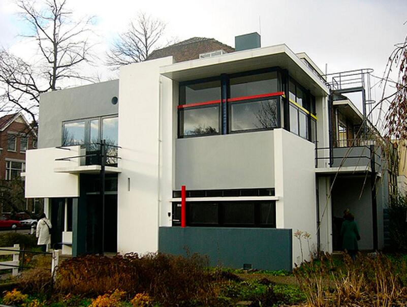
- piani sospesi,
- elementi che si intersecano,
- profondità non come “prospettiva”, ma come articolazione.
- colore,
- stacco,
- posizione relativa.
La facciata della Casa Rietveld Schröder del 1924 è una composizione asimmetrica e dinamica di piani e linee orizzontali e verticali scollegati, che riflette i principi del movimento artistico De Stijl. I componenti sembrano scivolare l’uno accanto all’altro, creando un effetto collage che frammenta il volume dell’edificio e sfida le idee tradizionali di massa solida.
Composizione ed effetti visivi
- Il volume esterno della casa è suddiviso in parti costitutive, con pareti, lastre, pilastri e travi trattati come singoli elementi lineari e piatti. Questo approccio conferisce un nuovo significato spaziale ai componenti strutturali.
- Gli elementi sporgenti e arretrati creano una composizione dinamica e tridimensionale che sfuma i confini tra spazio interno ed esterno. Anche le grandi finestre con telai sottili sottolineano l’apertura.
- Il colore è usato deliberatamente per definire e separare i diversi piani e linee. Le superfici sono dipinte in bianco e varie tonalità di grigio. Gli elementi lineari (ad esempio, i bordi dei balconi, le sporgenze del tetto, i pali di sostegno sottili) sono accentuati con colori primari come il rosso, il blu e il giallo. I telai delle finestre e delle porte sono dipinti di nero per enfatizzare ulteriormente le linee grafiche.
- Illusioni ottiche: tonalità più chiare di grigio e bianco sono state collocate in primo piano rispetto alle superfici più scure per sottolinearne la separazione, poiché l’osservatore percepisce i colori più chiari come più vicini.
- Spazio flessibile: il progetto è frutto della collaborazione tra l’architetto Gerrit Rietveld e il cliente Truus Schröder, che desiderava una casa senza pareti convenzionali e statiche. Il piano superiore, in particolare, è dotato di un sistema di pannelli scorrevoli e girevoli che consentono di trasformare lo spazio da un’unica zona aperta durante il giorno a diverse stanze più piccole durante la notte.
- Integrazione di arte e architettura: la facciata è considerata una rappresentazione tridimensionale di un dipinto di Piet Mondrian De Stijl, con ogni superficie che contribuisce a una composizione precisa di forma, spazio e colore.
- Continuità: la composizione si estende dall’esterno all’interno, con linee, piani e colori che scorrono continuamente attraverso lo spazio. Le finestre sono incernierate in modo da aprirsi solo a 90 gradi rispetto alla parete, mantenendo la rigorosa disciplina geometrica.
La soglia come condizione percettiva:
passaggio, differenza, trasformazione
La soglia segna un cambio di stato nello spazio e nella percezione. È un punto di discontinuità, trasformazione, riorientamento. L’architettura inizia quando lo spazio smette di essere omogeneo e diventa esperienza distinta. Le immagini scelte mettono in evidenza la forza percettiva del passaggio e la sua capacità di generare forma.
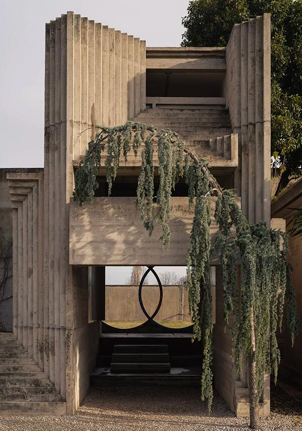
- cambiamenti minimi di luce,
- passaggi stretti vs aperture improvvise,
- direzioni che si piegano,
- variazioni materiche.
La sequenza d’ingresso alla Tomba Brion di Carlo Scarpa è un percorso simbolico accuratamente progettato (o “percorso catartico di iniziazione”) che accompagna i visitatori dal mondo esterno a un santuario contemplativo. L’ingresso principale, chiamato Propilei, introduce elementi architettonici e simbolici chiave che guidano il visitatore attraverso il sito.
La sequenza d’ingresso prevede le seguenti fasi:
- Avvicinamento e muro di cinta: il complesso è racchiuso da un muro di cemento che si inclina verso l’interno con un angolo di 45 gradi, separando sottilmente il santuario dal cimitero comunale adiacente e dai campi circostanti.
- I Propilei: fungono da ingresso formale (prendendo in prestito il nome dall’ingresso dell’Acropoli) e sono un’area coperta realizzata in cemento grezzo.
- I cerchi intersecanti: all’ingresso, i visitatori passano davanti a un dettaglio caratterizzato da due finestre circolari intersecanti, incorniciate da mosaico e ottone. Questo motivo simboleggia l’amore duraturo e l’unione di Giuseppe e Onorina Brion, la coppia per cui è stata costruita la tomba.
- Il sentiero e l’acqua: entrando, un sentiero conduce a un grande prato soleggiato. Uno stretto canale, alimentato da una sorgente vicino ai sarcofagi, guida l’acqua attraverso il complesso fino a una grande piscina, fungendo da guida e simboleggiando la rinascita.
- Prospettive scorciate: Scarpa ha utilizzato una serie di sequenze e prospettive angolari per controllare la prospettiva del visitatore, creando un senso di scoperta e un’interazione continua tra gli spazi interni ed esterni.
- L’Arcosolium: Seguendo il percorso principale, il visitatore raggiunge l’arcosolium, un grande arco in cemento decorato con mosaici colorati che ospita i sarcofagi dei coniugi Brion. Questa struttura funge da ponte simbolico che collega la vita e la morte.
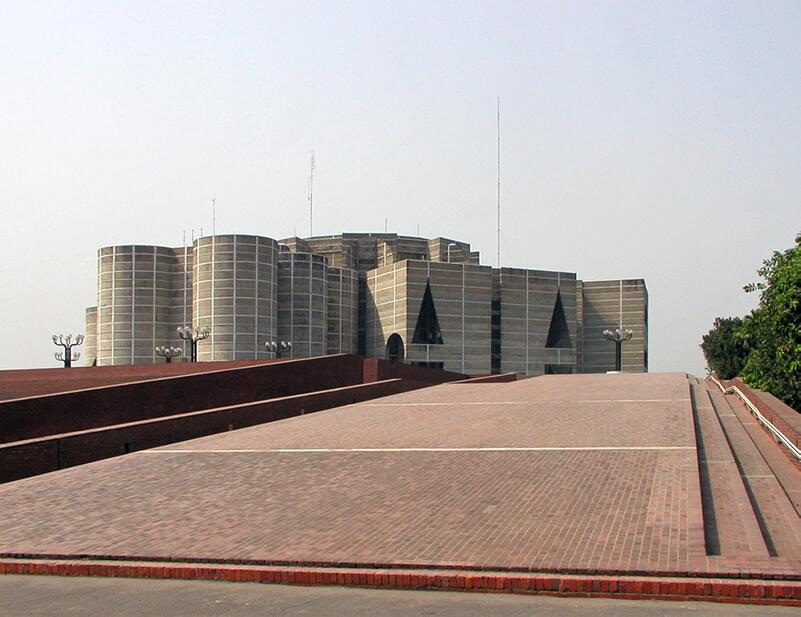
- compressione del corpo,
- scala quasi monumentale,
- passaggio dal buio alla luce,
- apertura improvvisa verso il grande vuoto d’acqua.
La sequenza di ingresso del Palazzo del Parlamento del Bangladesh (Jatiya Sangsad Bhaban) progettato da Louis Kahn è un percorso attentamente studiato che accompagna visitatori e parlamentari attraverso una gerarchia di spazi, dalle aree pubbliche esterne alla camera legislativa centrale, utilizzando acqua, luce e massa per creare una potente esperienza spaziale e simbolica.
La sequenza Il complesso presenta due piazze principali che determinano esperienze di ingresso diverse:
La piazza sud funge da punto di accesso pubblico principale. I visitatori si avvicinano lungo Manik Mia Avenue ed entrano nel complesso attraverso questo basamento leggermente rialzato (alto 6 metri), che funge da imponente base visiva per la maestosa struttura. Questa ampia area aperta ospita il parcheggio e le strutture di supporto sotto la piattaforma principale, separando fisicamente le funzioni quotidiane dal nucleo legislativo soprastante.
La piazza presidenziale situato sul lato nord di fronte al lago Crescent, è più riservato e utilizzato principalmente dal presidente e da altri dignitari.
La sequenza di ingresso è caratterizzata da elementi architettonici specifici che guidano il movimento e creano atmosfera:
- Acqua: un grande lago artificiale circonda l’edificio del Parlamento, che i visitatori devono attraversare (tramite ponti) per raggiungere la struttura principale. Questo elemento, ispirato al paesaggio deltizio locale, funge da barriera fisica e simbolica, creando un senso di arrivo e di transizione dal mondo quotidiano al cuore civico della nazione.
- Massa e geometria: l’approccio prevede di navigare intorno e attraverso massicce forme in cemento, compresi i blocchi periferici degli uffici (ostello, ecc.) e le grandi aperture geometriche (triangoli, cerchi, semicerchi) che definiscono la facciata. Questi elementi conferiscono all’edificio una presenza forte e monumentale e controllano la vista e la luce durante l’avvicinamento.
- Il deambulatorio (corridoio di circolazione): Una volta all’interno dell’edificio principale, un deambulatorio di sette piani pieno di luce (un percorso circolare simile a quelli degli edifici religiosi) circonda la sala centrale. Questo corridoio funge da spina dorsale principale della circolazione, guidando le persone intorno al vuoto centrale e creando aspettativa per l’ingresso nella sala legislativa principale.
- Luce: In tutta la sequenza, la luce naturale gioca un ruolo fondamentale. Kahn ha progettato “elementi che diffondono la luce” (colonne/pozzi cavi) che portano la luce in profondità negli spazi interni, creando un gioco di luci e ombre e una qualità spirituale che conduce alla sala principale.
- La sala principale: La sequenza culmina infine nella vasta sala riunioni ottagonale, caratterizzata da un magnifico tetto a guscio parabolico e da un lampadario progettato su misura che incanala la luce naturale proveniente da un lucernario soprastante, conferendo un senso di stupore e importanza al processo legislativo.
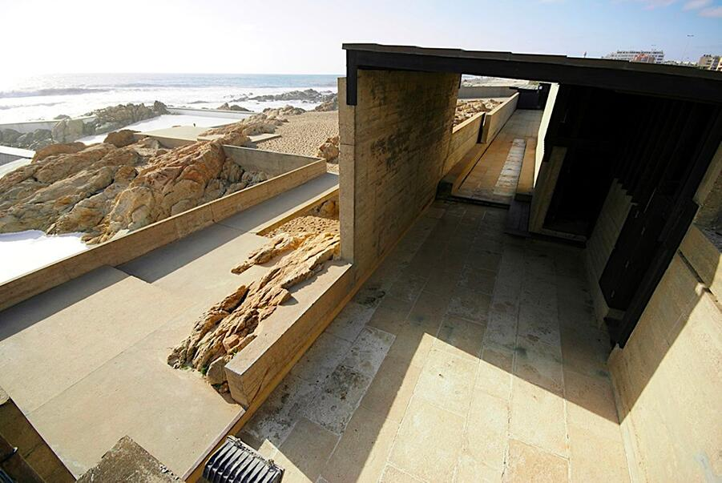
- si infila tra due rocce,
- abbassa il cielo,
- contrae lo spazio,
- poi si apre verso l’oceano.
Il passaggio attraverso le rocce delle Piscinas de Leça di Álvaro Siza è un elemento chiave del progetto che orchestra un viaggio sensoriale per i visitatori, una transizione deliberata dall’ambiente urbano al paesaggio marino naturale.
- Esperienza sensoriale: Il viaggio inizia al livello della strada, dove una lunga e liscia rampa di cemento conduce i visitatori verso gli spogliatoi. Durante questa discesa, alte e ruvide pareti di cemento oscurano la vista sia della strada alle spalle che dell’oceano davanti, isolando i visitatori dal contesto visivo. Questo passaggio architettonico mirato esalta gli altri sensi, in particolare il suono delle onde che si infrangono, creando aspettativa.
- Soglia: il passaggio attraverso le formazioni rocciose funge da soglia drammatica, una “porta” che segna il passaggio dall’approccio chiuso alla vista espansiva dell’oceano. Questo momento è il punto in cui l’architettura si integra completamente con il paesaggio costiero naturale.
- Integrazione con la natura: all’uscita dagli spogliatoi e dopo aver attraversato questa soglia, si rivela l’intera estensione delle piscine, incastonate organicamente tra le rocce preesistenti e i bassi muri di cemento. Siza ha conservato meticolosamente le formazioni rocciose naturali, utilizzandoli per definire i bordi delle piscine di acqua salata e sfumare il confine tra la struttura artificiale e il selvaggio Oceano Atlantico.
- Il culmine: il passaggio culmina in una prima vista accuratamente incorniciata del mare e delle piscine, immergendo il visitatore in un ambiente naturale unico che il design di Siza ha cercato di valorizzare e completare, piuttosto che dominare.
Il ritmo dello spazio:
ripetizione, variazione, intervallo
Lo spazio non si presenta mai come sequenza neutra: è modulato da ritmi, pause, accenti. Ripetizione e variazione strutturano la percezione, danno senso all’estensione, rendono leggibile la forma. Il ritmo costruisce relazioni e orienta il corpo. Le immagini rendono visibile questa sintassi invisibile che precede la composizione.
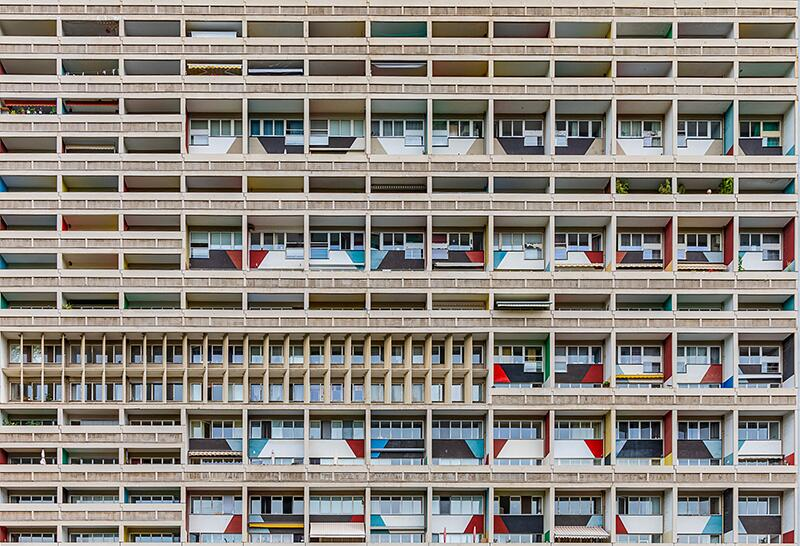
- moduli ricorrenti,
- intervalli variati,
- pieni/vuoti alternati,
- sistema cromatico calibrato.
La facciata dell’Unité d’Habitation di Marsiglia, progettata da Le Corbusier e completata nel 1952, presenta caratteristici balconi protetti da frangisole in cemento, spesso colorati all’interno. Questi elementi emblematici sono parte integrante dell’architettura brutalista e modernista dell’edificio.
Caratteristiche architettoniche
- Frangisole: i balconi sono incorniciati da robuste strutture in cemento, chiamate frangisole. La loro funzione principale è quella di regolare la luce naturale e il calore negli appartamenti bloccando i raggi diretti del sole, adatti al clima mediterraneo di Marsiglia.
- Tavolozza dei colori: Le Corbusier ha utilizzato colori primari vivaci (rosso, giallo, blu) per dipingere le pareti interne delle logge (balconi), in contrasto con il cemento grezzo della facciata, una caratteristica spesso visibile nelle foto a colori.
- Facciata modulare: la ripetizione e la disposizione dei balconi creano un motivo geometrico ritmico che conferisce alla facciata la sua identità visiva, riflettendo il sistema di misura “Modulor” sviluppato da Le Corbusier.
- Funzionalità: ogni balcone fa parte di un’unità abitativa e consente una ventilazione trasversale essenziale negli appartamenti, sottolineando l’attenzione dell’architetto per il benessere dei residenti.
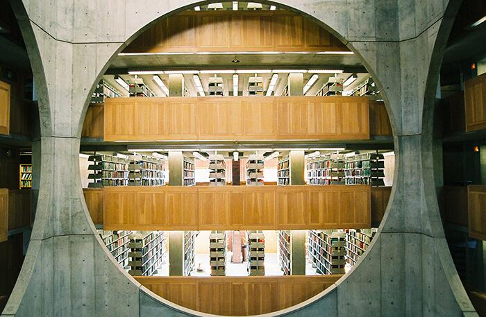
- alternanza dei vuoti centrali e delle nicchie,
- ripetizione dei moduli in legno,
- luce naturale che scandisce le superfici,
- una sequenza che è allo stesso tempo spaziale e luminosa.
La sala centrale della biblioteca della Phillips Exeter Academy progettata da Louis Kahn è uno spazio cerimoniale alto 24 metri che costituisce il cuore dell’edificio. L’interno è un vuoto quadrato simile a una cattedrale, circondato da enormi aperture circolari in cemento che offrono una vista sugli scaffali dei libri ai piani circostanti. Questo progetto è un celebre gioco di materiali, geometria e luce naturale.
Architettura e design
- Disposizione concentrica. La sala centrale è la più interna di tre anelli quadrati concentrici, un concetto che Kahn definiva “scatola nella scatola” o “ciambelle”. L’anello esterno contiene singole cabine di lettura lungo le pareti esterne, mentre l’anello centrale ospita le scaffalature in cemento.
- Giustapposizione di materiali. Il caldo rovere color miele delle ringhiere e del pavimento contrasta con il cemento monumentale e spoglio delle pareti circostanti. Questo crea un senso di calore rispetto agli elementi strutturali più imponenti.
- Diffusione della luce. La luce naturale entra da un grande lucernario circolare nella parte superiore dell’atrio. Due massicce travi trasversali in cemento attraversano il soffitto, diffondendo la luce e distribuendola uniformemente in tutto lo spazio e fino ai piani sottostanti.
- Forma simbolica. Le enormi aperture circolari ricavate nelle pareti di cemento creano un gioco di quadrati e cerchi, un tema ricorrente nell’opera di Kahn. Il design rivela i libri nell’anello interno, invitando i lettori a scoprire la collezione.
- Umile senso di arrivo. I visitatori che entrano nella sala centrale sono destinati a sentirsi umiliati dalle dimensioni dello spazio. I paragoni architettonici con una cattedrale sottolineano il ruolo della biblioteca come “tempio dell’apprendimento”.
- Spazio sociale tranquillo. Sebbene la sala sia uno spazio comune, il suo design favorisce un’atmosfera riflessiva e tranquilla. Gli studenti possono provare un senso di coscienza collettiva senza essere disturbati nel loro studio individuale.
- Orientamento visivo. Il vuoto centrale permette ai visitatori di comprendere a colpo d’occhio la disposizione della biblioteca. Vedendo gli scaffali dei libri dall’ingresso, gli utenti possono intuire intuitivamente l’organizzazione della collezione.
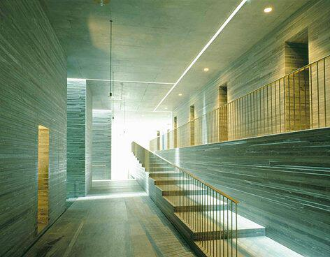
- i blocchi di pietra,
- le altezze variabili,
- le aperture calibrate,
- le pozze di luce, creano un ritmo quasi musicale. È un esempio sublime di come il ritmo possa essere un’esperienza atmosferica, non solo una sequenza geometrica.
I corridoi interni delle Terme di Vals di Peter Zumthor sono caratterizzati da una sequenza di spazi interconnessi simili a grotte, costruiti con 60.000 lastre orizzontali di quarzite gneiss di Vals, estratta localmente. Questo design crea un’esperienza profondamente sensoriale e monolitica, che evoca la sensazione di trovarsi all’interno di una montagna o di un’antica sottostruttura.
Caratteristiche architettoniche dei corridoi
- Materialità e consistenza: Il materiale principale è la quarzite locale, nota come gneiss di Vals. La pietra è tagliata in strisce lunghe un metro e posata orizzontalmente, creando un motivo lineare e deciso. Questa disposizione a strati, con variazioni di colore, conferisce alle pareti una qualità unica, quasi tessile, che contrasta con la superficie liscia dell’acqua e della luce.
- Esperienza spaziale: i corridoi sono stati intenzionalmente progettati come un percorso “labirintico”, che controlla la prospettiva dei bagnanti e li conduce attraverso un percorso di circolazione accuratamente modellato. Il gioco di luci e ombre e i suoni mutevoli dell’acqua intensificano l’esperienza sensoriale. I soffitti alti nelle aree principali aiutano a prevenire qualsiasi sensazione di claustrofobia, nonostante la costruzione solida e senza finestre di molti santuari interni.
- Luce: La luce è un elemento fondamentale, utilizzato per ottenere un effetto drammatico. Le strette fessure nel soffitto e i piani verticali di luce provenienti dalle piscine adiacenti creano linee nette e un’illuminazione suggestiva in spazi sotterranei altrimenti poco illuminati. Questa manipolazione della luce, dell’acqua e della pietra è fondamentale per il design suggestivo di Zumthor.
- Blocchi monolitici: L’edificio è concepito come una serie di blocchi di pietra massicci e compatti e di vuoti. I corridoi sono essenzialmente gli spazi “scavati” tra questi elementi strutturali. Questo metodo di costruzione conferisce agli interni un aspetto solido e senza tempo, come se fossero stati scolpiti direttamente nella roccia anziché costruiti.
- Collegamento con la natura: Il principio di progettazione era quello di costruire “nella montagna” e “con la pietra”, creando un’architettura profondamente integrata con l’ambiente alpino circostante. La natura sotterranea dei bagni, collegati all’hotel solo da un passaggio sotterraneo, enfatizza la separazione dal mondo esterno per un’esperienza rituale.
La forma come campo di tensioni:
forze, direzioni, polarità
La forma nasce da tensioni, non da contorni. Spinte, polarità, equilibri instabili disegnano un campo in cui il progetto comincia a prendere corpo. La composizione non inizia da un perimetro, ma da un sistema di forze. Le immagini esplorano questa fase prefigurativa, dove l’energia spaziale è più rilevante della geometria.
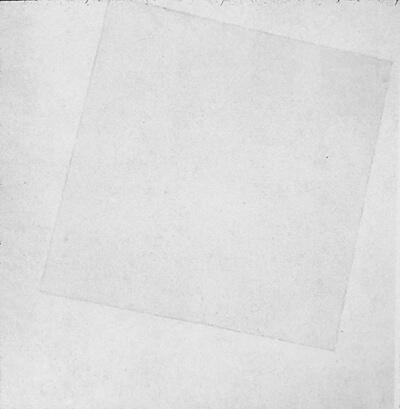
- il quadrato inclinato
- la polarità vuoto/pieno
- la tensione tra superfici quasi invisibili
- l’assenza di centro
Bianco su bianco è un dipinto radicale e influente in cui Kazimir Malevich ha spinto i confini dell’astrazione a un livello senza precedenti. Raffigura un quadrato bianco che fluttua senza peso in un campo di un bianco leggermente più caldo.
Caratteristiche e interpretazioni principali:
- Suprematismo: L’opera è un esempio centrale della teoria estetica di Malevich, da lui definita Suprematismo, che significa “la supremazia del sentimento o della percezione pura nelle arti pittoriche” rispetto alla rappresentazione oggettiva.
- Minimalismo e texture: Riducendo al minimo gli elementi pittorici, Malevich ha messo in risalto gli aspetti materiali della pittura. La mano dell’artista è visibile nella delicata pennellata e nella ricca texture della pittura, e i due bianchi sono leggermente diversi per tonalità e tono.
- Simbolismo: Per Malevich, il bianco era il colore dell’infinito e rappresentava un mondo utopico di forma pura e un regno di sentimenti superiori. La posizione leggermente decentrata e inclinata del quadrato interno crea un’illusione di movimento e spazio infinito, piuttosto che confini fissi.
- Contesto: Realizzato un anno dopo la Rivoluzione russa, il senso di liberazione del dipinto aveva connotazioni sia estetiche che sociopolitiche, incarnando una rottura radicale con le forme d’arte tradizionali e una visione di una nuova società.
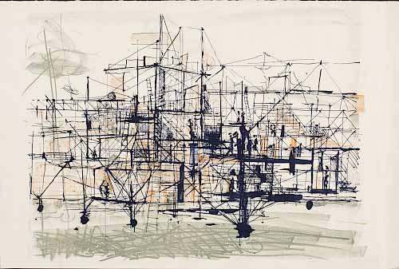
- vettori spaziali,
- instabilità controllata,
- tensioni che attraversano la pagina,
- direzioni che si sovrappongono.
I disegni Micromegas realizzati da Daniel Libeskind nel 1979 sono una serie di studi architettonici che esplorano il potenziale fittizio e teorico dello spazio architettonico, andando oltre la rappresentazione tradizionale. Il progetto, che prende il nome da un racconto breve di Voltaire, è composto da undici disegni a matita originali, successivamente utilizzati come studi per una serie di dodici stampe. I disegni presentano geometrie disorientanti in proiezione parallela. Includono una stampa intitolata Time Sections che mostra elementi architettonici frammentati. Pur apparendo meccanici, gli originali sono stati disegnati a mano e creati per uno studio teorico, senza un programma specifico. Queste opere fanno parte della collezione del MoMA. Realizzati mentre Libeskind insegnava a Cranbrook, i disegni evidenziano un interesse per la geometria e l’uso del disegno tecnico per visualizzare idee spaziali. Suggeriscono uno scenario post-apocalittico simile al romanzo A Canticle for Leibowitz. I disegni Micromegas sono significativi nell’architettura decostruttivista e sono stati esposti nella mostra Drawing Ambience.
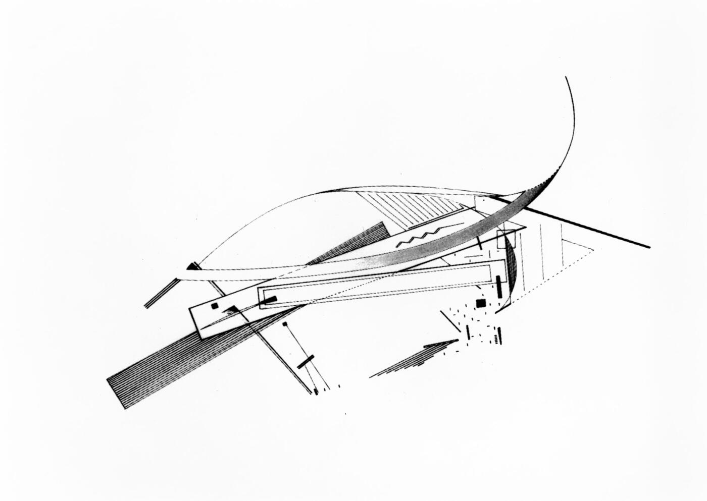
- l’architettura si comporta come un campo dinamico,
- masse leggere avanzano come forze vettoriali,
- i piani scorrono,
- l’orizzonte viene tagliato.
Il progetto di Zaha Hadid del 1983, The Peak Leisure Club, ha prodotto diversi disegni distintivi, tra cui una vista isometrica che funziona in modo simile a un disegno assonometrico. Questi disegni sono noti per il loro stile radicale e frammentato, influenzato dal suprematismo russo, e sono considerati fondamentali per la sua carriera.
Aspetti chiave del disegno e del progetto:
- Stile e influenza: i disegni applicano i principi del Suprematismo, utilizzando un approccio cubista per rappresentare una “geologia artificiale” astratta per l’edificio. Sono caratterizzati da angoli acuti, travi a sbalzo e forme fluttuanti che sfidano la gravità.
- Rappresentazione: Hadid ha utilizzato la pittura come strumento di progettazione principale, con i disegni che fungono da “manifesti” della sua nuova visione architettonica piuttosto che da tradizionali progetti tecnici. Il “Overall Isometric, Day View” è un esempio particolarmente significativo della collezione.
- Concept del progetto: il progetto proponeva un lussuoso complesso ricreativo e residenziale sulle colline di Hong Kong, che prevedeva lo scavo del sito per creare scogliere artificiali e l’inserimento di strati orizzontali e vuoti per le varie attività del club.
- Significato: sebbene non sia mai stato realizzato, il progetto ha vinto un concorso internazionale e ha portato Hadid a ottenere un ampio riconoscimento. I disegni furono esposti nell’influente mostra “Deconstructivist Architecture” del 1988 al MoMA di New York.